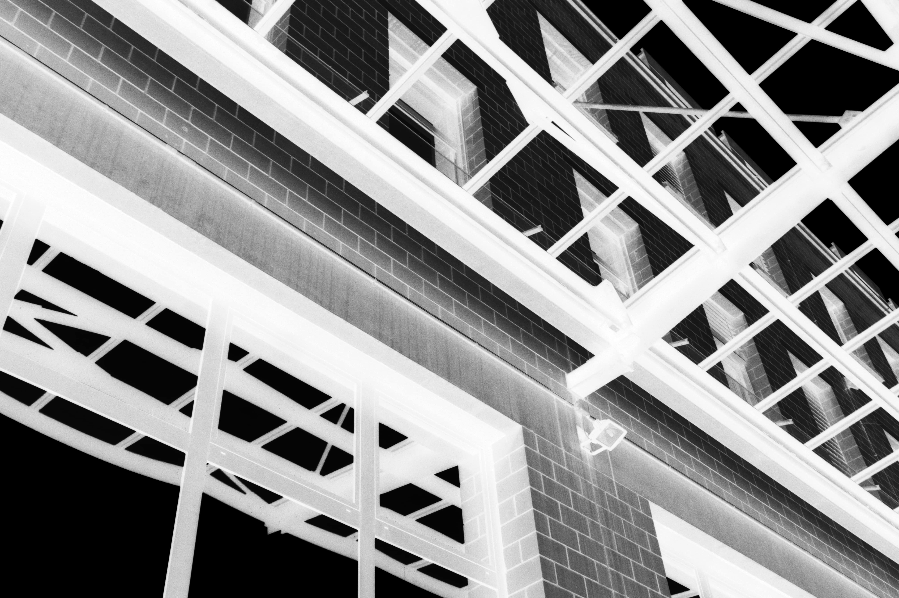

ABCicade
The Art School of Theatre in Bern wanted its scenography to work with new room interventions. We decided to use the Rimini Protokoll, an alphabet created by the direction collective «Rimini Protokoll» from Berlin as a basis for our project. The School subdivides its floors into sections, which are marked with the letters A, B and C. These letters of the ABC are used for orientation inside the building and we used them as a creative base for our reflexions. The building consists of unique forms and materials, which we decided to use as a grid for a new typeface. The typeface is used in the realization of the theatre alphabet. There are some interactive rooms where the beholder can add his or her won interpretation to the explanation and some static rooms in which the theatre words are not modifiable. In this project I worked with Yannick Neuhaus and Yoshiya Abiko, hence it was a group project.
ABOUT
Laura Leuenberger (*1994) is a graphic designer based in Switzerland.
2014 - 2015 Remedial Art Course Hochschule für Kunst und Design Luzern
2015 - 2018 Bachelor Visual Communication Hochschule der Künste Bern
Webdesign: Laura Leuenberger Code: Michael Schürmann
WORK
KFZ
Life in Pictures
Big Data
Heimat
Pure News
ABCicade
Royal Baden

Mousposition